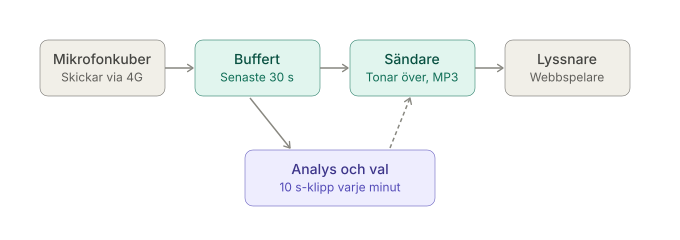
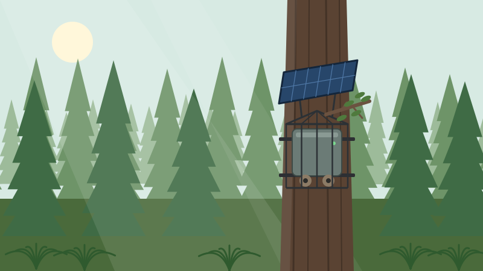
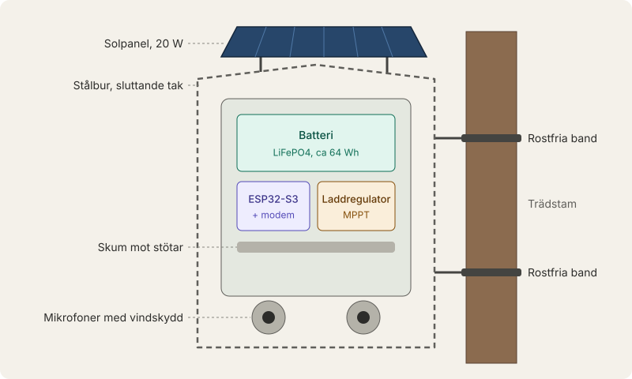
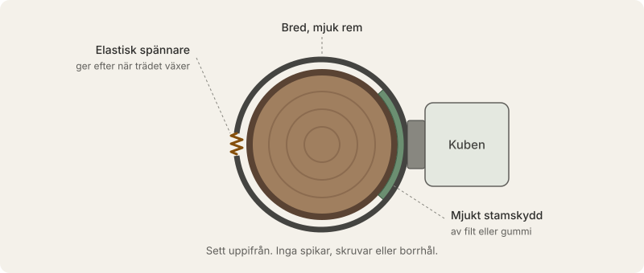
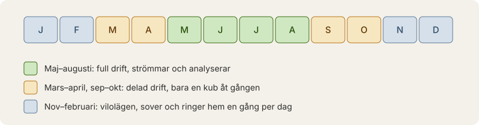
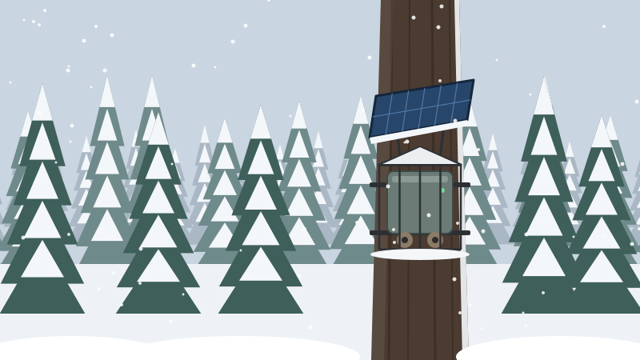
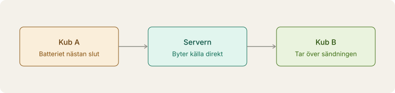

Nature Sound
Skogen, just nu. Ljud i hög kvalitet från mikrofoner som står ute i naturen – vi väljer alltid den bästa platsen åt dig.
Så fungerar det
Små mikrofonkuber sitter uppe i träden i skogen och skickar ljud i hög kvalitet till vår server. Servern väljer ut den renaste inspelningen och skickar den vidare till dig.

- Kuberna skickar ljudet över mobilnätet.
- Servern sparar de senaste 30 sekunderna från varje kub.
- Varje minut lyssnar vi av ett 10 sekunder långt klipp från varje kub efter vind, brus, brum, klippning, dunsar och röster.
- Den renaste inspelningen sänds vidare till dig. Vi byter bara när en annan kub är tydligt bättre, och tonar över mjukt.
Mikrofonkuben
Varje kub är cirka 30 cm och sitter fast på en trädstam.


- Slagtålig låda inuti ett stålbur med sluttande tak, så att grenar glider av.
- Två mikrofoner under kuben, bakom akustiskt tyg och pälsvindskydd, på skum så att regn och stötar inte hörs i ljudet.
- Fastsatt med breda, mjuka remmar runt stammen. Inga spikar, skruvar eller borrhål.
- Går en kub sönder byter servern automatiskt till en annan.
Skonsam mot träden
Kuberna ska inte skada skogen de lyssnar på. Därför hänger de i remmar och sitter aldrig fast med spik eller skruv.

- Breda, mjuka remmar fördelar trycket så att barken inte skärs eller skavs.
- Ett skydd av filt eller gummi ligger mellan remmen och barken.
- En elastisk spännare ger efter när stammen växer, så att remmen aldrig snör in trädet. Vi kontrollerar och lossar remmarna minst en gång om året.
- Vi väljer friska, levande träd och undviker att sätta kuben under döda grenar.
- Kuberna sätts bara upp med markägarens tillstånd, och kan tas bort utan att lämna några spår.
Drivs av solen
Kuberna drivs av en solpanel och ett batteri. De sover när ingen lyssnar på dem och strömmar bara när servern ber om det, normalt en kub åt gången.
Så snål är kuben
- En kub som sover drar bara några milliwatt, under en procent av vad den drar när den strömmar.
- En kub som strömmar ljud drar ungefär 1 watt.
- Eftersom bara en kub strömmar åt gången blir snittet ungefär 3–8 Wh per dygn och kub. Det motsvarar ungefär en halv mobilladdning.
- Det räcker med en liten solpanel på cirka 20 W och ett batteri på cirka 64 Wh.
Uppskattningar för den slutliga kuben. Prototypen med Raspberry Pi drar betydligt mer, ungefär 1,5–2 W.


Börjar batteriet ta slut säger kuben till servern, som tonar mjukt över till en annan källa.

Siffror för panel och batteri är uppskattningar. Vi mäter i verklig drift.